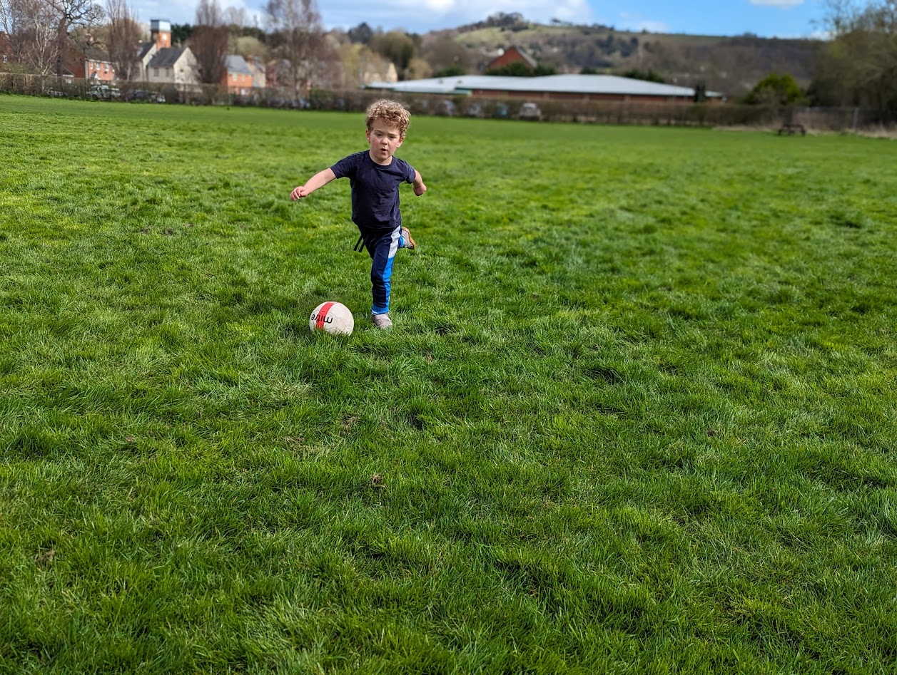

Hi! I love football. This page shows what I have learned and what I am practising.
You can see Jules' full photo album on Google Photos. Here's one quick preview from the football page.
Opens Google Photos in a new tab.
Loading latest reflection
Getting Jules' newest update ready...
Looking for match dates and team fixtures? You can view them on the official FA website.
See official fixturesOpens the FA Full-Time website in a new tab.